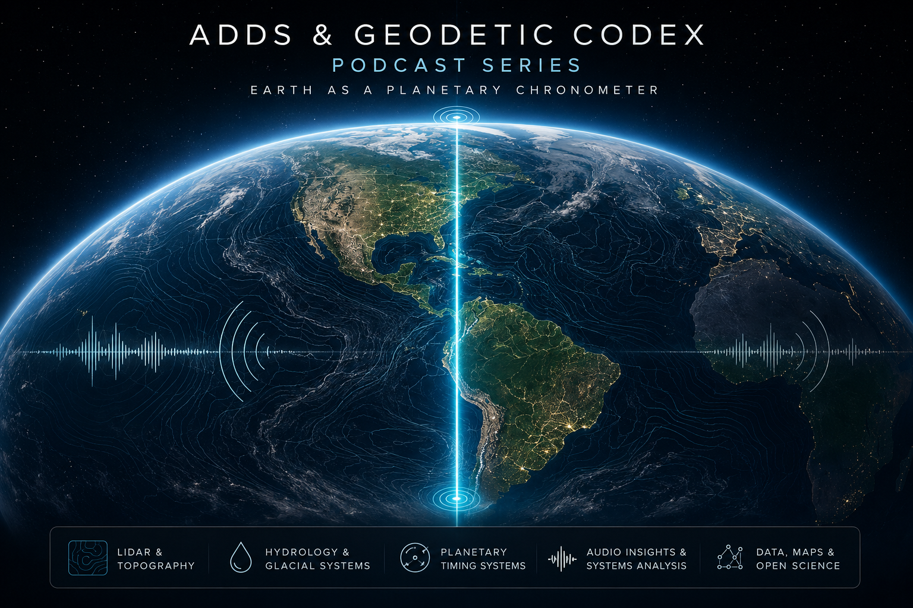

ADDS & Geodetic Codex Podcast Series
Season 1: Earth as a Planetary Chronometer

This public audio series translates the Geodetic Codex, ADDS framework, glacial hydrology, planetary timing systems, ancient settlement geography, and future habitability questions into accessible episodes for independent review.
Research framing: These episodes are intended as public-facing
science communication and exploratory synthesis. They support, but do not replace,
the underlying datasets, maps, KML files, lidar imagery, and statistical modeling
published for independent review.